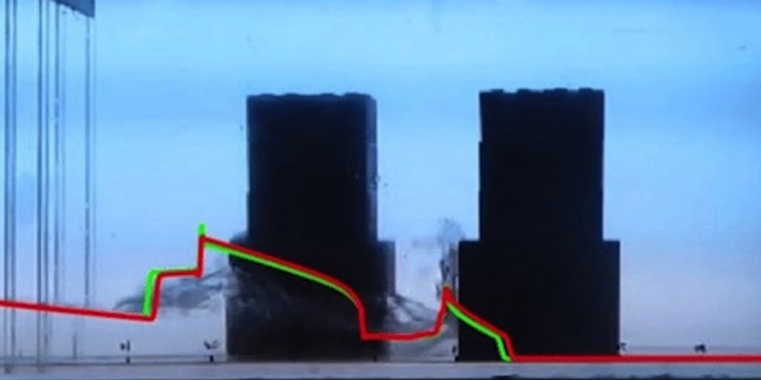

Numerical modelling of tsunami propagation through buildings
As part of my Master of Science in Civil Engineering thesis, I implemented a 1D finite-difference scheme to solve the Saint-Venant equations and quicly evaluate the propagation of a tsunami bore through buildings.
The lack of understanding on the bore propagation around buildings added to the tsunami events in last decades have generated the need of researching and increasing the knowledge in the field. Within my master thesis, a one-dimensional Saint-Venant model solved using a finite- difference scheme was studied and assessed, with the goal of being used to approximate bore flow on laboratory and real scenarios. The model was implemented by using Matlab_R2015b. The consistency and accuracy of the model was tested by comparing its results and the results obtained by similar models with the analytical dam-break solution and with dam-break experimental results. Figure 1 shows that the numerical results fit reasonably well the experimental ones. Therefore, it was concluded that the developed model was consistent and it adequately estimated the flow characteristics.

Figure 1: Comparison of the experimental with the numerical results.
Video showing a dam-break experiment with only one building.